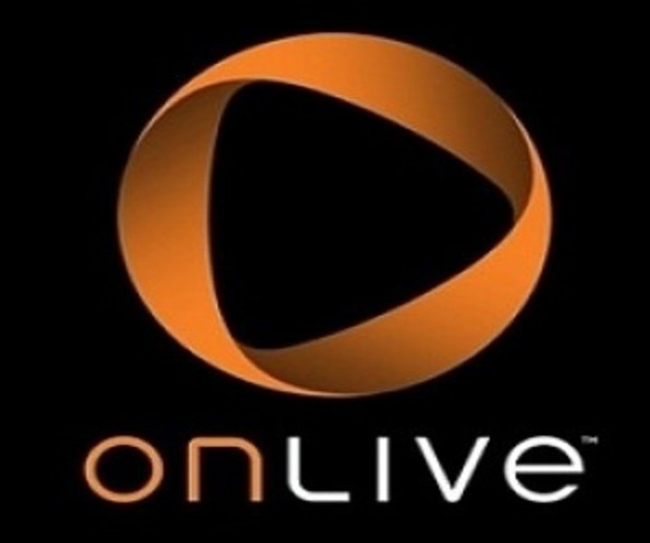

Развитие облачных платформ

OnLive, 2010

Nvidia GeForce NOW, 2015
ИУ3-32М Арутин Виктор
Выполнил: студент группы ИУ3-32М Арутин Виктор
Платформа видеоигр – основа, с помощью которой видеоигры запускаются, работают и взаимодействуют с пользователем.
Платформы могут быть аппаратными (физические устройства) и программными (операционные системы, экосистемы).
Игровые консоли
Персональные компьютеры
Мобильные устройства
Облачные платформы
Создание и дистрибуция игр;
Формирование пользовательских предпочтений;
Инновации и развитие индустрии.
«Tennis for Two», 1958
«Pong», 1972
Atari 2600, 1977
NES, 1985
Game Boy, 1989
Nokia 5210, 1997
HP Pavilion PC, 1995
Steam, 2003
OnLive, 2010
Nvidia GeForce NOW, 2015
Распределение рынка платформ видеоигр между ключевыми игроками
Общая выручка мирового рынка игровых платформ за 2024
Статистика доходов российских платформ видеоигр
| Преимущества | Недостатки |
|---|---|
| Простота использования | Ограниченная гибкость |
| Эксклюзивные игры | Стоимость игр и подписок |
| Оптимизация производительности | Отсутствие обратной совместимости |
| Цена | Меньшая многозадачность |
Преимущества и недостатки игровых консолей
| Преимущества | Недостатки |
|---|---|
| Мощность | Стоимость |
| Большие возможности для модернизаций | Сложность настройки |
| Широкий выбор игр | Габариты |
| Универсальность | Меньше удобств использования |
Преимущества и недостатки персональных компьютеров
| Преимущества | Недостатки |
|---|---|
| Доступность | Малое количество ресурсов |
| Интуитивное управление | Ограниченность управления |
| Широкая аудитория | Монетизация |
| Автоматические обновления | Проблемы с комфортом пользователя |
Преимущества и недостатки мобильных устройств
| Преимущества | Недостатки |
|---|---|
| Доступность на различных устройствах | Ограниченный выбор игр |
| Почти нет требований к аппаратной части | Требование стабильного интернет-соединения |
| Мгновенный доступ к играм | Модель подписок на игр |
| Игровые сессии без привязки к устройствам | Задержки |
Преимущества и недостатки облачных платформ
Игровые консоли - удобные, стабильные и доступные игровые платформы с эксклюзивным контентом.
Персональные компьютеры - мощные игровые платформы с огромным выбором игр.
Мобильные устройства - быстрый доступ к играм в любое время с простым и понятным управлением.
Облачные платформы – универсальные игровые платформы, требующие только интернет-соединение.
Виртуальная и дополненная реальность;
Интеграция искусственного интеллекта;
Голосовое и мысленное управление;
Создание мета-вселенных;
Кроссплатформенный гейминг.
Blake J. Harris. Console wars: Sega, Nintendo, and the battle that defined a generation - HarperCollins Publishers Australia Pty. Ltd., 2020 – 576 p.;
Статистика по мировым видеоигровым платформам за 2023 г. URL: https://www.statista.com/study/123559/video-gaming-worldwide/ (дата обращения: 17.09.2024);
Данилюк М.Д., Шпаковский Ю.Ф. Разработка видеоигр: проблемы современных исследований. URL: https://cyberleninka.ru/article/n/razrabotka-videoigr-problemy-sovremennyh-issledovaniy (дата обращения: 19.09.2024).